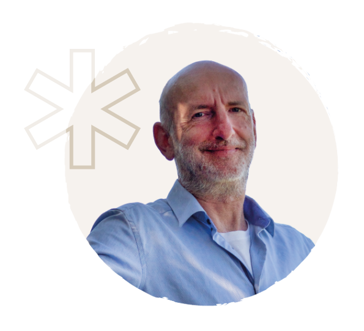

Ob körperliche oder seelische Erkrankung, berufliche Herausforderungen oder Probleme in Beziehungen – alles, was uns im Leben begegnet, ist ein Wegweiser. Doch nur selten verstehen wir seine ursächliche Botschaft.
Mit unserer ganzheitlichen Lebensbegleitung sind wir gern für dich da, um diese Wegweiser (Symptome) zu entschlüsseln und dich auf deinem ganz persönlichen Erkenntnisweg zu begleiten. Gemeinsam finden wir den nächsten fälligen Schritt, der dir die Tür in ein für dich stimmiges und erfülltes Leben öffnet.
Bist du bereit? Dann gehe jetzt den ersten entscheidenden Schritt.
„Das Leben stellt uns keineswegs vor Hindernisse, sondern zeigt uns Wegweiser.“
Ralf Baars

Jeder Mensch hat ein besonderes Talent. Meine Berufung ist es, Menschen auf ihrem Lebensweg zu begleiten, damit sie ein glückliches und erfolgreiches – vor allem jedoch ein für sie selbst stimmiges und erfülltes Leben gestalten können. Geboren im Jahr 1965 wurde ich durch mehrjährige eigene Erkrankung auf den Weg zum Heilpraktiker geführt.
Nach meiner Tätigkeit in eigener Naturheilpraxis erfüllte sich 2009 ein Herzensprojekt: Gemeinsam mit meiner damaligen Frau Petra-Susanne gründete ich das Zentrum für Lebensbegleitung und Naturheilkunde, das seit 2026 den Namenszusatz „Neu-Atlantis“ trägt. Ich freue mich schon sehr darauf, dir mehr darüber zu erzählen!
Du wünschst dir Antwort auf eine für dich wesentliche Frage? Schreib dir diese Frage auf, such dir in der Natur einen etwa faustgroßen Stein, der dich anspricht – und buch dir dein schamanisches Steinorakel. Kostenfrei. Persönlich. Per Zoom.
{{ s.text }}
Du möchtest Blockaden und Muster auflösen, uralte karmische Verstrickungen hinter dir lassen, Wegweiser (Symptome) gemeinsam entschlüsseln und Impulse mitnehmen, die für dich heilsam sein könnten? Melde dich gern per E-Mail bei uns oder sprich uns auf den Anrufbeantworter! Wir rufen dich an und vereinbaren einen Termin für ein Erstgespräch mit dir.
Bitte beachte: Unsere Kontaktaufnahme kann ggf. ein, zwei Tage dauern, da wir unermüdlich für unsere Klienten im Dienst sind.
Jetzt Termin vereinbarenGanzheitliche Lebensbegleitung in unserer Definition geht davon aus, dass menschliche Erfahrungen und insbesondere „Symptome“ keineswegs isoliert betrachtet werden sollten. Gedanken, Gefühle, körperliche Empfindungen, von Menschen gelebte Beziehungen und innere Haltungen und „Glaubensfragen“ stehen in einem engen Zusammenhang mit frühkindlichen Erfahrungen, Prägungen, Verstrickungen in unseren Familiensystemen, karmischen UR-Sachen etc. Herausforderungen bzw. Wegweiser (Symptome) zeigen sich daher oft auf mehreren Ebenen gleichzeitig.
In der ganzheitlichen Lebensbegleitung fragen wir somit nicht nur „Was ist gerade herausfordernd?“, sondern auch „Wodurch könnte es entstanden sein?“ und „Was möchte sich darin zeigen?“ Der von uns begleitete Mensch wird dadurch nicht auf ein individuelles Problem reduziert, sondern in seiner gesamten Lebenssituation wahrgenommen. Ziel ist es, die Botschaft, die hinter dem Wegweiser (Symptom) wirkt, ursächlich gemeinsam zu entschlüsseln und dadurch Impulse bzw. Wandel von der belastenden in eine erfüllte Lebenssituation herbeizuführen.
Erste Hinweise zu möglichen Ursachen und Verstrickungen findest du in der Rubrik „Wissenswertes“.
Unsere ganzheitliche Lebensbegleitung eignet sich für alle Lebenssituationen. Dazu gehören Erkrankungen aller Art, emotionale Belastungen, innere Unruhe, Erschöpfung, depressive Verstimmungen, Ängste, Beziehungskonflikte, familiäre Spannungen und wiederkehrende Lebensmuster ebenso wie berufliche Anliegen, Sinnfragen oder Phasen der Neuorientierung.
Körperliche Beschwerden betrachten wir dabei als Ausdruck innerer Prozesse – untergeordnet im Sinne einer Diagnose, jedoch vielmehr als Hinweis darauf, dass etwas im Leben aus dem Gleichgewicht geraten ist. Unsere Arbeit lädt dazu ein, diesen Hinweisen (Wegweisern) achtsam zu begegnen und sie in einen größeren Zusammenhang einzuordnen, um letztlich heilsame Impulse für die Wandlung zu erfahren.
Ganzheitliche Lebensbegleitung ist keine Therapie im klassischen Sinn. Sie fokussiert sich auf Ursachen (die z. B. auch aus früheren Leben oder dem Familiensystem stammen können), Zusammenhänge und Prozesse, statt auf Symptome.
Im Mittelpunkt steht dabei kein „Reparaturgedanke“. Es ist vielmehr das Sichtbarmachen, Begleiten und Wandeln von bisher belastend wirkenden bzw. „krankmachenden“ Faktoren – hin zu einem (wieder) freien Fluss der Lebensenergie (Gesundheit/Wohlbefinden). Dabei ist es für uns Gewissheit, dass es keine „unheilbaren Dinge“ gibt, sondern grundsätzlich ALLES gewandelt werden kann.
Spiritualität wird bei uns nicht als Glaubenssystem verstanden. Wir sind zutiefst davon überzeugt, dass es im Universum etwas gibt, das weitaus größer ist als wir und dass unser eigenes Leben in einem größeren Zusammenhang zu sehen ist. Einem Zusammenhang, der sich über frühere Leben und unser gesamtes Familiensystem erstreckt. Für uns ist es Gewissheit, dass alles schöpferische DA-SEIN aus EINER URKRAFT stammt und zwar unabhängig von jeglichen menschlichen Betrachtungsweisen und Religionen.
Systemische Aufstellungsarbeit macht u. a. innere und äußere Muster in menschlichen Beziehungen sichtbar. Sie kann helfen zu verstehen, wie familiäre Prägungen, Loyalitäten oder unbewusste Bindungen das eigene Leben beeinflussen. Das reicht tatsächlich so weit, dass Menschen anstelle eines selbst-bestimmten Lebens ein „Skript“ leben.
Im Rahmen der ganzheitlichen Lebensbegleitung ist die systemische Aufstellungsarbeit in multiplen Dimensionen (Geistiges Familienstellen) für uns ein wesentlicher Dreh- und Angelpunkt. Eine einzigartige Möglichkeit, Zusammenhänge zu erkennen und neue Blickwinkel zu erschließen. Oftmals entstehen daraus tiefgreifende Lösungen, Ordnung und erweitertes Bewusst-Sein für das eigene (ER-)Leben.